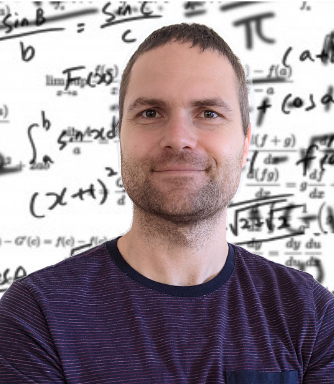

Marcus Noack is the original founder of CASE. His background spans geophysics,
applied mathematics, function optimization, stochastic processes, dimensionality
reduction, and high-performance computing. At Berkeley Lab, his work supports
the autonomous experimentation community through practical software and support,
and his contributions earned him the 2022 Director's Award for Exceptional
Early-Career Achievements.